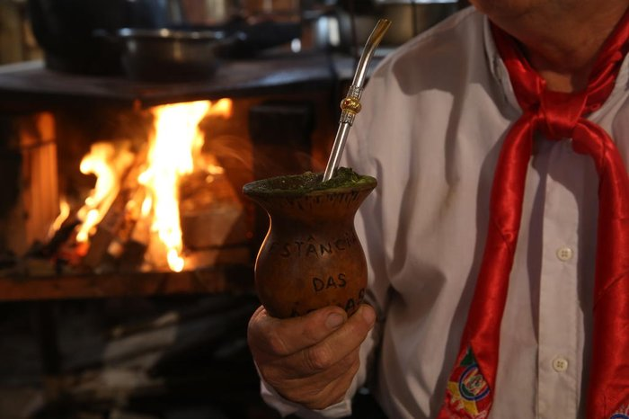
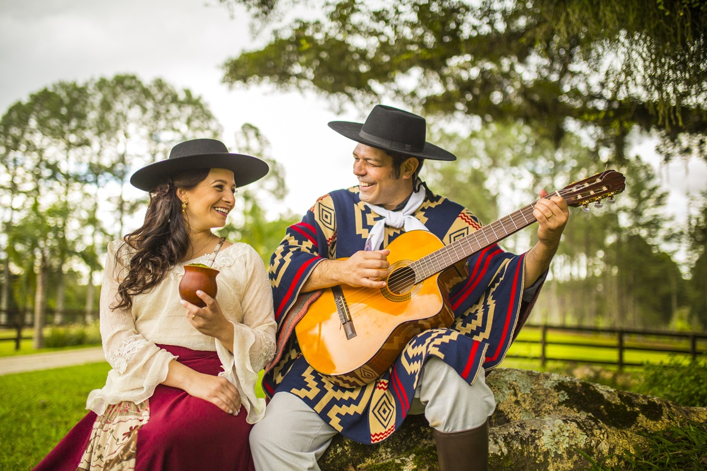
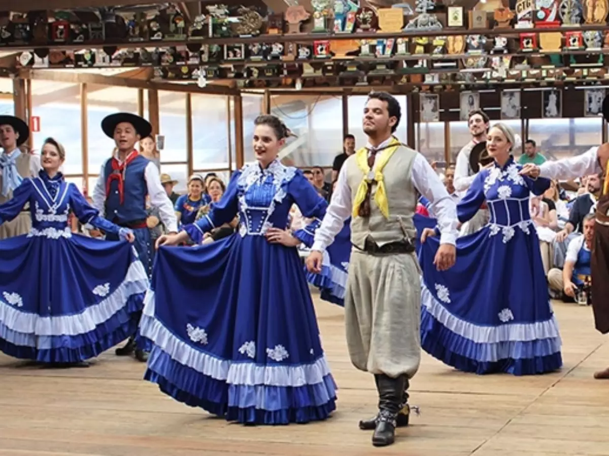
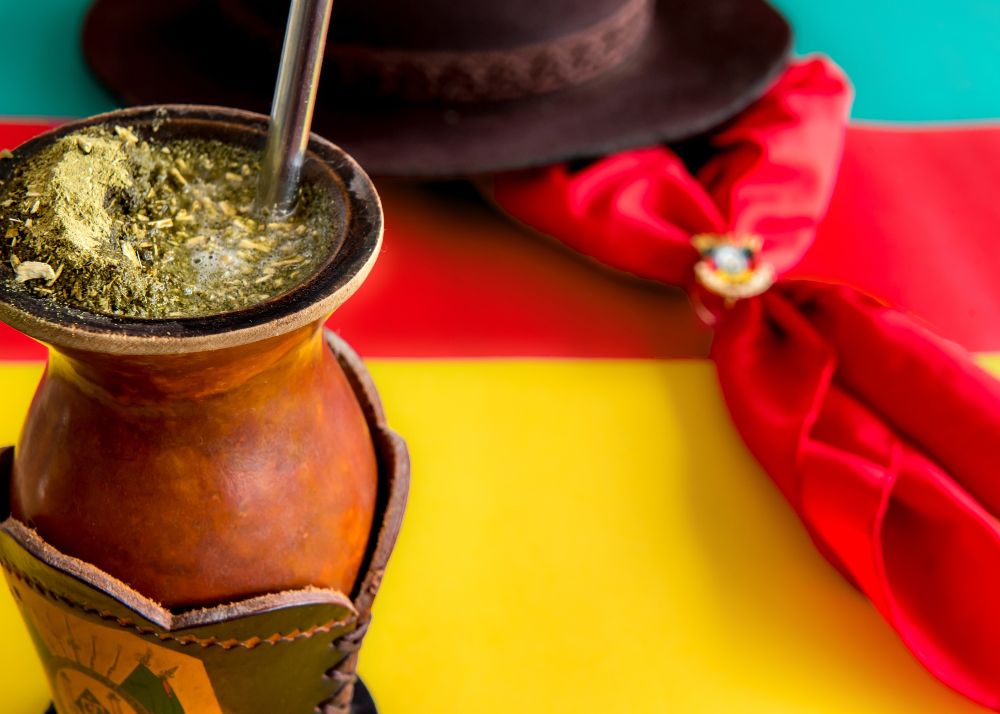

Como os gaúchos chegaram em Curitiba e qual é a importância deles
A vivência dos gaúchos no Paraná é marcada pela preservação de seus costumes e tradições, que foram trazidos principalmente por famílias vindas do Rio Grande do Sul. Mesmo vivendo em outro estado, muitos mantiveram hábitos que fazem parte de sua identidade cultural e os transmitiram às novas gerações.
Entre os costumes mais conhecidos estão o hábito de tomar chimarrão, preparar churrasco em reuniões familiares, usar roupas típicas em festas tradicionalistas e participar dos Centros de Tradições Gaúchas (CTGs). Também é comum valorizar a vida no campo, a convivência em família, o respeito às tradições e a hospitalidade.
Ao longo dos anos, os gaúchos passaram a conviver com pessoas de diferentes origens que vivem no Paraná, compartilhando seus costumes e também adotando hábitos da cultura paranaense. Essa troca cultural contribuiu para enriquecer a diversidade do estado e fortalecer o respeito entre diferentes tradições.

Importância cultural dos gaúchos no Paraná
A chegada dos gaúchos ao Paraná aconteceu em diferentes períodos da história e contribuiu para o desenvolvimento econômico e cultural do estado. Muitos migrantes vieram principalmente do Rio Grande do Sul em busca de terras férteis para a agricultura e a pecuária, especialmente entre as décadas de 1950 e 1970.
Esses grupos se estabeleceram, principalmente, nas regiões Oeste, Sudoeste e Centro-Sul do Paraná. Eles trouxeram técnicas de cultivo, criação de gado e formas de organização das propriedades rurais que ajudaram no crescimento da produção agrícola. Além disso, participaram da fundação e do desenvolvimento de diversos municípios.
Importância cultural dos gaúchos
Os gaúchos tiveram um papel muito importante no desenvolvimento do Paraná. Ao chegarem ao estado, eles contribuíram para o crescimento da agricultura e da pecuária, trazendo novas técnicas de cultivo e de criação de animais. Esse trabalho ajudou a aumentar a produção de alimentos e fortaleceu a economia de diversas regiões.
Além da contribuição econômica, os gaúchos também influenciaram a cultura paranaense. Costumes como o chimarrão, o churrasco, as danças tradicionais e os Centros de Tradições Gaúchas (CTGs) passaram a fazer parte da vida de muitas comunidades. Essas tradições ajudam a preservar a história e a identidade dos descendentes de gaúchos no estado.

Memória e Patrimônio
Imagens em memória aos gaúchos


Curiosidades
Curiosidade 1
A cultura gaúcha está muito presente em diversas regiões do Paraná, principalmente no Centro-Sul, Sudoeste e Oeste do estado. Essa influência está relacionada à migração de pessoas vindas do Rio Grande do Sul e de Santa Catarina, que trouxeram seus costumes e tradições. O chimarrão, o churrasco, as cavalgadas, os rodeios e as músicas tradicionalistas são alguns exemplos dessa influência.
No Paraná, existem também os Centros de Tradições Gaúchas (CTGs), que ajudam a preservar costumes como as danças, as roupas tradicionais e a música. Porém, a cultura gaúcha paranaense não é exatamente igual à do Rio Grande do Sul, pois se misturou com outras culturas presentes no estado, formando uma identidade regional diversificada.
Curiosidade 2
Uma curiosidade sobre a cultura gaúcha no Paraná é o grande consumo de chimarrão, uma bebida feita com erva-mate e água quente. A erva-mate é muito importante para a história e a economia da região Sul. Outra tradição bastante conhecida é o churrasco, que está ligado aos costumes da vida no campo.
Também são comuns eventos com danças como vaneira, xote e chamamé, além de apresentações de música tradicionalista. Em festas e rodeios, muitas pessoas usam a chamada pilcha, formada por peças como bombacha, botas e lenço. Essas tradições mostram como a cultura gaúcha se tornou parte da diversidade cultural do Paraná.